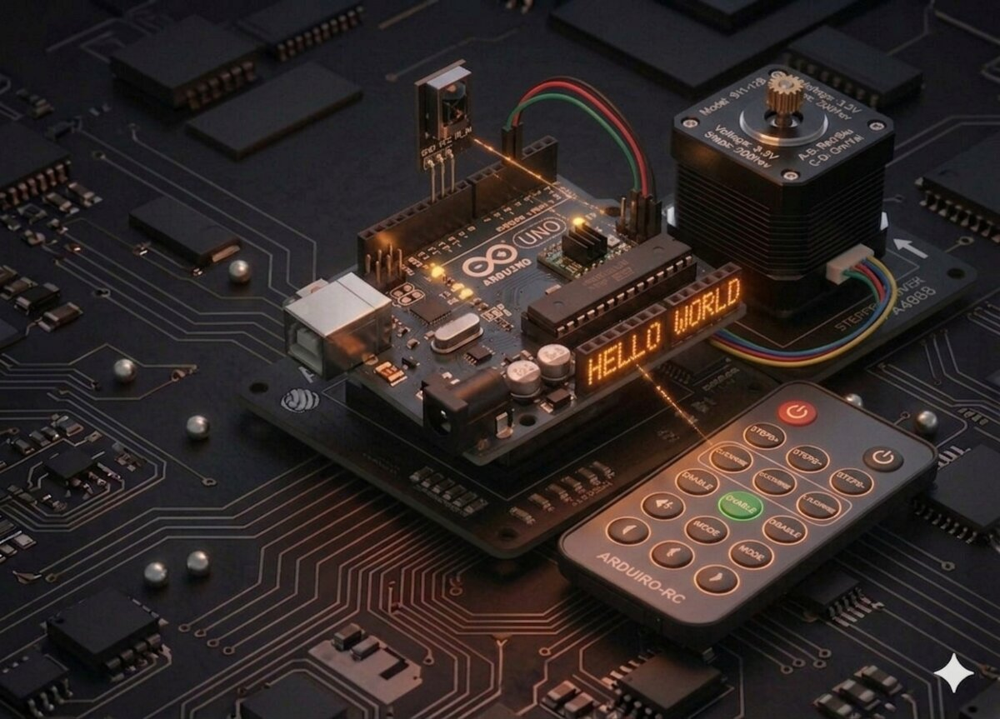

Stepper + telecomandă
Combină motorul pas cu pas cu telecomanda IR — controlează rotirea stângă/dreapta printr-o apăsare de buton.
Motor pas cu pas cu telecomandă¶
Acest proiect combină două concepte pe care le-ai învățat: receptorul IR (Proiect 12) și motorul pas cu pas (Proiect 22). Rezultatul: un mini-sistem care se rotește la comandă de pe telecomandă.

Componente necesare¶
| Componentă | Cantitate |
|---|---|
| Arduino Uno R3 | 1 |
| Breadboard 830 puncte | 1 |
| Receptor IR | 1 |
| Telecomandă IR | 1 |
| Modul driver ULN2003 | 1 |
| Motor stepper 28BYJ-48 | 1 |
| Fire jumper F-M | 9 |
| Fir jumper M-M | 1 |
Cum funcționează¶
Logica aplicației¶
- Apeși butonul SUS (↑) pe telecomandă → motorul face o rotație completă în sensul acelor de ceasornic.
- Apeși butonul JOS (↓) → o rotație completă în sens invers.
- Pentru alte butoane, motorul stă pe loc.
Decodarea IR¶
Fiecare buton al telecomenzii trimite un cod unic (hexazecimal). Trebuie să afli codurile butoanelor sus/jos pentru telecomanda ta: 1. Încarcă mai întâi codul din Proiect 12. 2. Apasă butoanele și notează-ți codurile afișate pe Serial Monitor. 3. Înlocuiește valorile în codul de jos.
De ce sursă externă?¶
Motorul consumă destul de mult curent. În timp ce Arduino îl poate alimenta pentru mișcări scurte, la utilizare intensă este mai bine să folosești o sursă separată (modulul de alimentare + adaptorul 9 V din kit).
Conectare¶
| Componentă | Arduino |
|---|---|
| Receptor IR S | D12 |
| Receptor IR VCC | 5V |
| Receptor IR GND | GND |
| ULN2003 IN1 | D8 |
| ULN2003 IN2 | D9 |
| ULN2003 IN3 | D10 |
| ULN2003 IN4 | D11 |
ULN2003 + |
5V (sau sursă externă) |
ULN2003 − |
GND (comun cu Arduino) |
Cod¶
/*
* Proiect 23 — Stepper controlat prin IR
* Sus = rotație CW, Jos = rotație CCW.
* Biblioteci: IRremote, Stepper
*/
#include <IRremote.h>
#include <Stepper.h>
const int stepsPerRevolution = 2048;
const int IR_PIN = 12;
// Înlocuiește aceste coduri cu cele ale telecomenzii tale!
#define BUTTON_UP 0x46
#define BUTTON_DOWN 0x15
Stepper myStepper(stepsPerRevolution, 8, 10, 9, 11);
void setup() {
Serial.begin(9600);
IrReceiver.begin(IR_PIN, ENABLE_LED_FEEDBACK);
myStepper.setSpeed(10);
}
void loop() {
if (IrReceiver.decode()) {
uint32_t code = IrReceiver.decodedIRData.command;
Serial.print("Primit: 0x"); Serial.println(code, HEX);
if (code == BUTTON_UP) {
Serial.println("SUS -> rotire CW");
myStepper.step(stepsPerRevolution);
} else if (code == BUTTON_DOWN) {
Serial.println("JOS -> rotire CCW");
myStepper.step(-stepsPerRevolution);
}
IrReceiver.resume();
}
}
Ce să încerci¶
- Adaugă butoane pentru jumătate de rotație sau 90°.
- Folosește tastatura cu membrană (Proiect 13) pentru control pe fir.
- Poziționează o săgeată la ora curentă — creează un ceas analogic mecanic.
- Controlează direcția unei mini-antene sau a unui capac.
Note¶
- Citirea IR durează câteva zeci de ms. În timp ce motorul se mișcă (
step()blochează), nu poți primi comenzi. - Codurile de buton depind de telecomanda ta — nu le copia orbește!
- Dacă motorul se mișcă greu, asigură-te că sursa de alimentare dă suficient curent.
Vezi și: Toate proiectele kit-ului